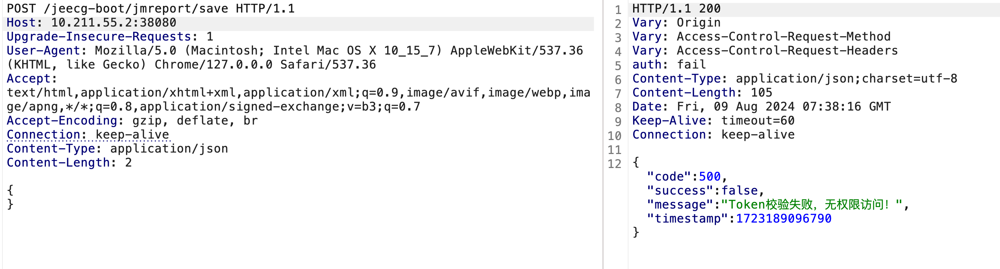

积木报表授权绕过漏洞缓解措施
0x00 前言
近期，积木报表被曝出存在一个授权绕过漏洞。该漏洞允许攻击者在请求中包含特定参数时绕过授权机制，从而访问诸如 save、queryFieldBySql、show 等接口。尽管之前的远程代码执行（RCE）漏洞已被修复，但攻击者仍能通过 AviatorScript 表达式注入，继续实现 RCE 攻击。
目前，积木报表的最新版本为 1.7.9，但测试发现，该版本仍存在授权绕过的风险。漏洞修复的版本暂未发布。为此，本文将提供一种有效的缓解措施，以帮助用户降低该漏洞带来的安全风险。
0x01 漏洞复现
至于漏洞分析这里就不进行了，有很多师傅已经发过详细的过程。这里使用的环境是jeecg-boot 3.7.0，积木报表版本为1.7.9。
以接口 jmreport/save为例来判断漏洞是否存在。当没有previousPage和jmLink参数时，提示Token校验失败。

增加previousPage和jmLink参数，且jmLink内容为类似 aaa||bbb 的base64 编码，可以保存成功，说明存在漏洞。
访问jmreport/queryFieldBySql接口，可以绕过授权进行查询。
但无法利用CVE-2023-4450漏洞。
利用 jmreport/save 接口发送请求，写入构造好的AviatorScript表达式。
访问jmreport/show 接口时触发。
从上面的结果来看，在授权绕过的情况下，仍然可以RCE。接下来就是如何防止漏洞被利用。
0x02 修复
由于目前的最新版本依然存在漏洞，单纯升级并不能解决问题。如果应用系统不依赖积木报表，最简单直接的方法是删除积木报表。如果仍需使用该功能且不希望大幅修改代码，可以采取增加过滤器或使用 Nginx 代理等方式来防护。
以下是使用 Nginx 反向代理进行防护的示例。
根据漏洞的利用情况，可以设置当 URL 中同时包含参数 previousPage 和 jmLink 时，拦截请求并返回 403 错误。
以官方的docker为例，修改 /etc/nginx/conf.d/default.conf文件，增加如下代码：
1 | # 初始化变量 |
配置完成后，重启Nginx。再次请求，返回403，说明配置生效。
然而，当参数采用 URL 编码时，可以绕过上述限制。
比较暴力的方法是当URL中含有% 时，返回403。
1 | if ($request_uri ~* %) { |
配置后重启Nginx，再次请求，成功拦截。
另外，当 Nginx 安装了 lua-nginx-module 模块时，可以采用如下配置：
1 | http { |
通过以上配置，也可以有效防止漏洞被利用，进一步保障系统安全。
0x03 总结
由于积木报表最新版本仍存在授权绕过漏洞，本文提供了一种简单的缓解措施。当然，防护的方法有很多种，例如直接使用 Web 应用防火墙（WAF）拦截恶意请求，或者在后端增加过滤器来加强安全性。通过这些措施，用户可以暂时降低系统受到攻击的风险，保障系统的稳定与安全。